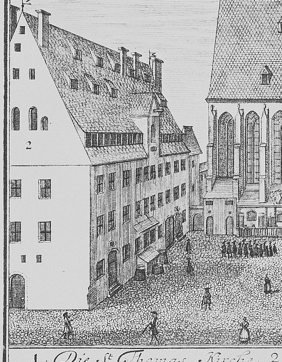

Simplifying Fractions
A Grade 4 preview: simplest form. Dimensions Math 3B, Chapter 10, Lesson 3 · Simplifying Fractions
Leipzig, Germany · about 300 years ago

How can you find a simpler name for a fraction by dividing?
Group every 2 sixteenths into 1 eighth. The numerator and the denominator are both divided by 2. The shaded amount stays the same.
You will…
- Group the parts of a measure into bigger, equal parts.
- Divide the numerator and the denominator by the same number.
- Keep dividing until a fraction is in simplest form.
Why Bach?
A real print made from a copper plate in 1723, the year Bach came to Leipzig to work. Number 1 is Saint Thomas Church. Number 2 is Saint Thomas School, where Bach lived and taught the boys who sang in the choir. Number 3 is a stone fountain in the square. The artist drew it from a house across the square. Today that house is the Bach Museum.


In 1731 Bach wrote church music called Wachet auf. That is German for "Sleepers, wake." In one part, the singers hold an old hymn tune in long notes, and the violins play quick notes all around it.
Today's math: one long note fills the same time as a group of short notes. When you group the parts of a measure into bigger parts, you divide the numerator and the denominator by the same number.
Today you'll divide by small numbers a lot. Type each answer, then check. You can fix any answer and check again.
Split every part
Two strips, the same length. The top strip has 8 equal parts with 1 shaded. In the bottom strip, every eighth is split into 2 pieces.
Think: Fewer Parts, Same Amount
🔨 Do · ✏️ WriteThe navy bar is one whole measure. Under it, the same measure is cut into tenths, halves and fifths. Eight-tenths is already shaded. The gold line shows where it stops.
Try the halves row
Tap a tile in the halves row. Look at where it stops.
Shade the fifths row up to the gold line
Tap the fifths tile that ends right on the gold line.
Name it with fifths
Help Felix
Pairs of tenths make fifths. Group every 2 tenths into 1 fifth. Both numbers are divided by 2, and the shaded length stays the same.
Divide the numerator and the denominator by the same number.
- Group the parts the same way. Here, every 2 tenths make 1 fifth.
- Divide the numerator. 8 shaded parts become 8 ÷ 2 = 4 shaded parts.
- Divide the denominator by the same number. 10 parts become 10 ÷ 2 = 5 parts.
- Check. Same whole, same shaded length, fewer and bigger parts. Can 4 and 5 both be divided by the same number? Only by 1. So four-fifths is in simplest form.
Four ways to see eight-tenths and four-fifths
Your Turn: Two Short Notes, One Longer Note
🔨 DoThe violins play 14 sixteenth notes in one measure. Every 2 sixteenth notes last as long as 1 eighth note. Group them and find the simplest name.
A strip cut into 16 equal parts, with 14 shaded, under 1 whole. The gold dots mark the lines you can make thick. Under the strip are two curved arrows and a row of ÷ tags.
Group the sixteenths in twos
Tap the line after every 2 tiles to make it thick. You need 7 thick lines.
Put ÷2 on the top arrow
Drag the ÷2 tag onto the top arrow.
Put ÷2 on the bottom arrow
Drag the ÷2 tag onto the bottom arrow.
Divide both numbers by 2
Can you group again?
Leo Divides One Number
🔨 Do · ✏️ WriteLeo wants a simpler name for two-twelfths. He divided only the numerator by 2 and wrote one-twelfth.
Fraction tiles under 1 whole: two bars of twelfths. Then two curved arrows from two-twelfths to a new fraction, and a row of ÷ tags.
Shade two-twelfths
Tap the 2nd tile in the top bar.
Shade Leo's one-twelfth
Tap the 1st tile in the bottom bar.
Is it the same amount?
Put ÷2 on the top arrow
Drag the ÷2 tag onto the top arrow.
Put ÷2 on the bottom arrow
Drag the ÷2 tag onto the bottom arrow.
Fix Leo's fraction
Help Leo
Juno Takes Away
🔨 Do · ✏️ WriteJuno wants a simpler name for two-tenths. She took 1 away from the numerator and 1 away from the denominator, and wrote one-ninth.
Fraction tiles under 1 whole: a bar of tenths and a bar of ninths. Use them to check Juno's work.
Shade two-tenths
Tap the 2nd tile in the tenths bar.
Shade Juno's one-ninth
Tap the 1st tile in the ninths bar.
Compare the lengths
Divide instead
Help Juno
Kai Stops Too Soon
🔨 Do · ✏️ WriteKai simplified sixteen-twentieths. He divided both numbers by 2, got eight-tenths, and stopped.
Kai's work: a strip of twentieths and a strip of tenths with the same amount shaded. Under it, a strip of tenths with gold dots on the lines you can make thick.
Kai's work: sixteen-twentieths = eight-tenths. He stopped here.
Can Kai divide again?
Group the tenths in twos
Tap the line after every 2 tiles to make it thick. You need 4 thick lines.
Finish Kai's work
Help Kai
Find the Simplest Name
🔨 Do · ✏️ WriteThe violins play 6 sixteenth notes, then rest. Write six-sixteenths in simplest form.
Two curved arrows from six-sixteenths to a new fraction, and a row of ÷ tags.
Pick a tag for the top arrow
Drag a tag onto the top arrow. It must divide both 6 and 16 with none left over.
Use the same tag on the bottom arrow
Drag the same tag onto the bottom arrow.
Name it
Tell why
The Tile Trade-In
🔨 Do · ✏️ WriteIn Sleepers, Wake, quick notes and long notes share the same measures. Start with a measure of 16 sixteenth notes. Trade them for bigger tiles until one long note fills the measure. Then try a measure where the violins play 14 sixteenths and rest.
Two measures made of fraction tiles. Under each one is a tray of bigger tiles. When you drag a bigger tile onto a measure, the small tiles trade for it if they group evenly. The old row stays above, a little faded, so you can see every step.
Problem 1 · Trade sixteenths for eighths
Drag the one-eighth tile from the tray onto the measure.
Problem 1 · Keep trading
Drag the next bigger tile onto the measure. Stop when one tile fills the whole measure.
Problem 1 · Play every row
Press ▶ Play every row. Listen: every row ends on the same beat.
Problem 2 · A measure with a rest
In the second measure, drag the one-eighth tile from the tray onto the measure.
Problem 2 · Name it
Problem 2 · Tell why
Prove It
✏️ WriteProblem 3 · Prove It
Two Ways Down
Write four-twentieths in simplest form. Take two small steps or one big one.
Turn in your work
- Check the list below. Jobs 1 to 8 are required. The Bonus is optional.
- Press 📋 Gather my answers, then 📋 Copy. Or press 🖨️ Print or save as PDF.
- Open this lesson's assignment in Canvas.
- Paste your answers (or upload your PDF and journal photo), then press Submit.
All my answers
Your answers and your work on this page save on this device as you go.
Before you turn in
- I finished Jobs 1 to 8.
- I drew ÷ arrows on both the numerator and the denominator in my math journal.
- I traded tiles until no bigger tile fit.
- I tried the Bonus. (optional)
Lesson 3.10.04 · Comparing Fractions, Part 1
Today you grouped parts to find the simplest name. Next, you'll use new names to compare two fractions with different denominators.
Bach · Sleepers, Wake (Wachet auf)
Bach's organ version, printed about 1748. Played here from Bach's music with a soft organ sound. About 3½ minutes.
Johann Sebastian Bach, Wachet auf, ruft uns die Stimme, BWV 645. Played with an organ sound made for this page from the Mutopia Project score (typeset by Bart Golsteijn from the Bach-Gesellschaft edition), CC BY-SA 2.5. This recording is shared under the same license.